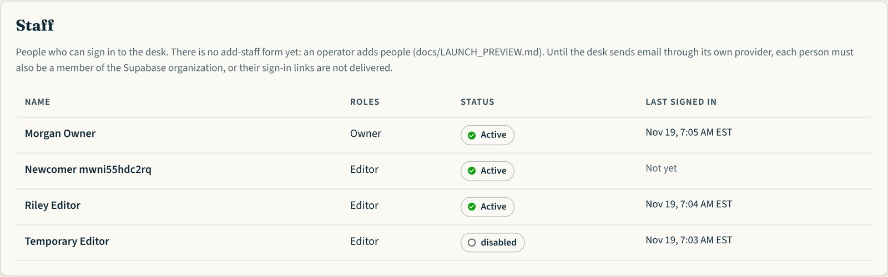

| Entry | DL-20261119-01 |
|---|---|
| Session | S01, turn 9 |
| Version | 0.7.3 |
| Branch | claude/intelligent-cannon-d1nqq6 |
| Base commit | b6e335fed92f |
| Started | Nov 19, 2026, 6:52 AM EST |
| Recorded | Nov 19, 2026, 7:20 AM EST |
| Tickets | SC-005 |
| Workstreams | WS-ENV |
| Status | complete |
Dave's owner account, and owners can see who has signed in
Summary
Paul asked to continue development and to get Dave signed up for his owner slot.
Dave Simpson now has an owner account on the live desk: a confirmed sign-in identity, his desk record and the owner role. It was checked the way the desk checks access, so the desk has two owners.
One step remains, and only Paul can take it. Supabase's free mailer emails only members of the Supabase organization, and its API cannot send that invitation. Paul invites Dave in the Supabase dashboard; Dave accepts, then signs in.
Owners can watch for it. In version 0.7.3, Settings under Staff shows owners when each person last signed in, or "Not yet". It is live on the desk.
Also confirmed live: Paul's first real-email sign-in happened on the evening of 18 November. A publication by the desk on Cloud Run is still untested.
What changed
- Live operation (no repository change): Dave's account was created as Paul's was in turn 5.
- Identity: Supabase's Auth admin API, using the project's secret key read into memory for one call and never printed or stored.
- Desk record: one SQL transaction for the principal and the owner role, as
scripts/staff.tsdoes. - Display name: "Dave Simpson", inferred from his address; Paul can correct it.
- Privacy: his address is not recorded anywhere in the repository.
- Database: migration
20261119140000_staff_sign_ins.sqladdsapp.staff_sign_ins().- It is a security-definer function returning each human principal's last sign-in, to owners only. Anyone else gets no rows.
- Only that one value leaves the auth schema.
- It is executable by signed-in staff, not by the public, agents or the publisher.
- It is applied live with its migration-history record (five migrations recorded).
- Desk, Settings, under Staff:
- owners get a "Last signed in" column ("Not yet" until someone's first sign-in);
- a disabled member reads "Disabled";
- the card's note no longer mentions Ghost (ADR-005 replaced it), and says how people are added and that each person must be a Supabase organization member until the desk sends its own email.
- Tests: 10 pgTAP tests (shape, grants, owners see everyone including people who have never signed in; editors and disabled owners see nothing). One end-to-end test: a new member shows "Not yet", the signed-in owner a time, and editors do not get the column.
- Docs:
docs/LAUNCH_PREVIEW.md: both founders have owner accounts, Paul's three-step invitation with role guidance, how to add someone else, and real-email sign-in marked done;docs/DESK.md: a Staff section;- CHANGELOG 0.7.3.
- Live: desk v0.7.3 on revision
sc-desk-00007-nhx(1 GiB).
Decisions
- Create the account now; leave the Supabase invitation to Paul.
- The Management API can list organization members but cannot invite them.
- An invitation grants dashboard access, so it is Paul's to send in any case.
- The organization holds only this project, so the docs give both options: Owner if Dave should co-own the infrastructure, Read-only if he only needs the desk.
- Do not test his sign-in by sending a link. The mailer would refuse his address today, the project's two-an-hour quota is shared, and a link requested by this session would not open in Dave's browser. Dave's own first sign-in is the test.
- Show sign-ins to owners only, and only the time. That is what onboarding needs, and nothing else from the auth schema leaves it. Editors see the same staff list as before.
- No self-service "add staff" form yet. Creating sign-in identities needs either a secret key in the desk, which ADR-003 rules out, or open sign-ups with an invitation check. And while the free mailer only reaches organization members, every new person needs Paul's invitation anyway. So it belongs with custom SMTP, as one decision.
Problems and resolutions
- The Docker daemon stopped while the session was paused, twice. The first restart was tied to the shell that started it. It now runs detached in its own session, and the local Supabase containers came back on their own.
- The new column showed times "in the future". It did not: the session had been paused for several hours, and the clock was right. The release and account dates in the docs were corrected from 18 to 19 November.
- A first query used a wrong table name (
publishing_settings) and failed harmlessly inside a rolled-back check. - CI failed three times on GitHub's side, not the code's.
- On
58ab7c8the runner could not start the local database: port 54322 was already in use. - On
d365e19both end-to-end jobs and one visual check failed while installing the test browser, because Ubuntu's package mirrors timed out. - In every case the steps that ran passed, including the new database tests and the build.
- CI now retries those setup steps: apt retries each download, the browser install gets three attempts with backoff, and the Supabase start gets one stop-and-retry. Each retry leaves a warning in the log.
- On
Evidence
- EV-0073: Dave's owner account on the live desk. With his identity bound, he is staff and owner, and sees 7 stories and 14 publish jobs. The desk has 2 active owners.
- EV-0074 (observation): Supabase refuses to email addresses outside the organization's team, sends at most 2 emails an hour, and has no API to send invitations. The organization holds only this project.
- EV-0075: pgTAP 282/282, Vitest 132/132, Playwright 33/33,
pnpm check, bundle scan. - EV-0076:
- the migration and grants are live;
- an owner sees Dave as never signed in, and Paul as signed in at 02:51 UTC on the 19th;
- a non-staff identity gets nothing;
- desk v0.7.3 is live;
- all publish jobs since are operator runs.

Risks and open questions
- Until Paul invites him, Dave cannot sign in. If he tries, the desk shows its neutral "a link is on its way" message and no email arrives. The desk logs the reason class, not the address.
- Inviting Dave as Owner gives him full control of the Supabase project, billing and deletion included. That is right for a co-founder, but it is the founders' call.
- Two founders now share two sign-in emails an hour under the free mailer. Custom SMTP removes both that limit and the membership requirement.
- Dave's display name was inferred ("Dave Simpson"). It shows in the desk, and on bylines if he writes.
Next actions
- Paul:
- Invite Dave to the Supabase organization (dashboard: Organization, Team, Invite) with the role you choose.
- Tell Dave to accept the invitation, then sign in at the desk, opening the link in the same browser.
- Watch Settings, under Staff, for his first sign-in.
- Paul, carried over:
- the security clean-up (the exposed Supabase key, the Google Cloud key, the access token);
- "Update the published story" on a sample, which is the first publication from Cloud Run;
- confirming ADR-006.
- Development, recommended next: custom SMTP on the publication's own domain, then self-service staff invitations with it (one ADR). That needs the founders' sending domain and an email provider account.
Evidence referenced
| ID | Result | Summary | Observed |
|---|---|---|---|
| EV-0073 | pass | Live: Dave Simpson has an owner account on the preview desk (confirmed sign-in identity, desk principal, owner role), verified as the desk checks access | Identity created 2026-11-19 11:55 UTC, email confirmed, never signed in. Principal active, roles [owner]. Bound as Dave: is staff, is owner, sees 7 stories and 14 publish jobs. The desk now has 2 active human owners. No email was sent. His address is not recorded in the repository |
| EV-0074 | info | Dave cannot receive sign-in links until he is a member of the Supabase organization; that invitation can only be sent from the dashboard | Supabase: without custom SMTP, Auth 'will refuse to deliver messages to addresses that are not part of the project's team' ('Email address not authorized'), 2 messages an hour. The Management API lists organization members but has no invitation endpoint. Auth config: built-in mailer (no SMTP host), sign-up disabled, links valid 15 minutes, 2 emails an hour. The organization holds only this project and has one member (Paul, Owner). Paul invites Dave in the dashboard; Dave accepts; then signs in |
| EV-0075 | pass | v0.7.3 tree: pgTAP 282/282 (10 new staff sign-in tests), Vitest 132/132, Playwright 33/33 (owners see sign-ins, editors do not), pnpm check, bundle scan | All exit 0. pgTAP: shape (two columns only), grants (staff yes; public, agents, publisher no), an owner sees every staff member including a never-signed-in owner with no time, an editor and a disabled owner see none. End to end: a newly added member shows 'Not yet', the signed-in owner a time, and the editor's Settings has no such column |
| EV-0076 | pass | Live: staff sign-ins migration applied and recorded, desk v0.7.3 on revision sc-desk-00007-nhx; an owner sees Paul's last sign-in and Dave as not yet signed in | 5 migrations recorded. EXECUTE: authenticated yes; anon, desk_agent, desk_publisher no; returns (principal_id, last_sign_in_at) only. As an owner: Dave Simpson null (shown as 'Not yet'), Paul Phillips 2026-11-19 02:51 UTC, so Paul's first real-email sign-in has happened. A non-staff identity gets 0 rows. Health {version: 0.7.3}; /settings without a session redirects to /sign-in. All publish jobs since are operator runs, so a publication by the desk on Cloud Run is still not exercised |